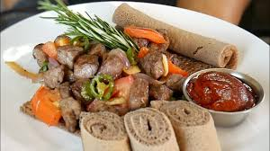

Tibs

Ethiopian Tibs
Ethiopian Tibs is a popular and versatile dish consisting of bite-sized pieces
of meat (commonly beef, lamb, or goat) sautéed or grilled with a variety of spices,
often including onions, garlic, ginger, and the signature berbere spice blend.
It can range from mild to very spicy, and its preparation often signifies respect or celebration.
Tibs is almost always served hot with injera, the spongy Ethiopian flatbread.
Ingredients
- Row meat(can be sheep or ox)
- Berbere Spice Blend
- Niter Kibbeh (Spiced Clarified Butter)
- onions
- powder of rosmarin
Steps
- Cut meat (beef, lamb, or goat) into bite-sized pieces.
- Heat pan and add niter kibbeh (spiced clarified butter) or oil.
- Sauté onions until softened.
- Add meat; brown quickly over high heat.
- Stir in garlic, ginger, and **berbere** spice blend.
- Cook until meat is tender and coated in spices (add a splash of water/broth if needed for saucier tibs).
- (Optional) Add sliced green chilies, bell peppers, or a dash of wine/tomato.
- Serve immediately with **injera**.
Home